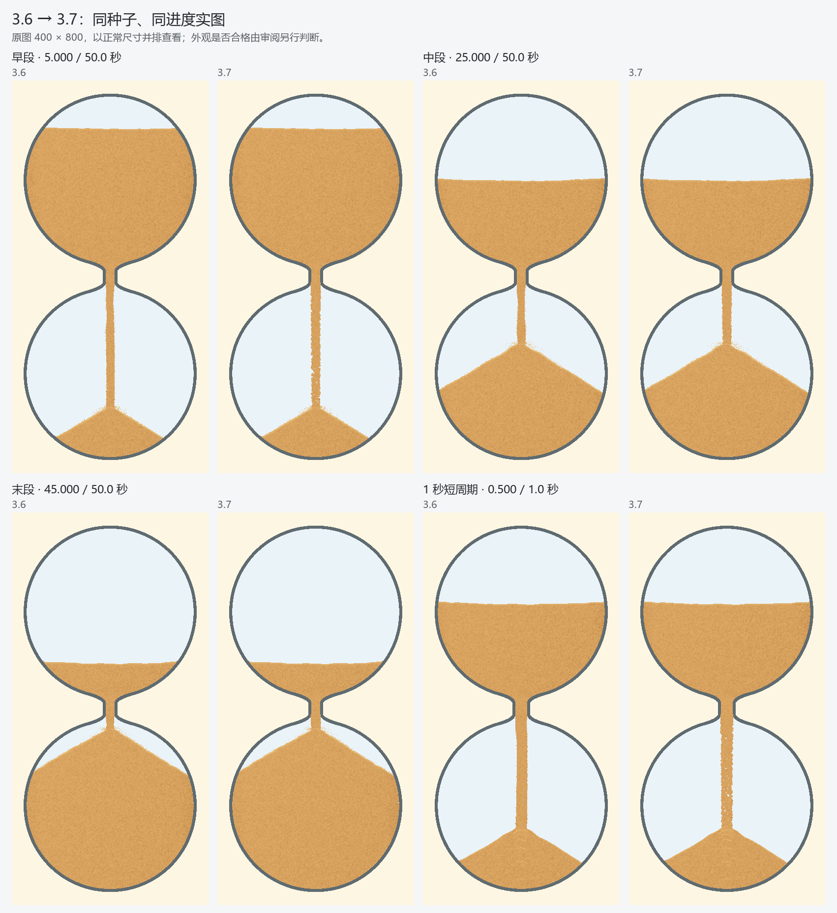
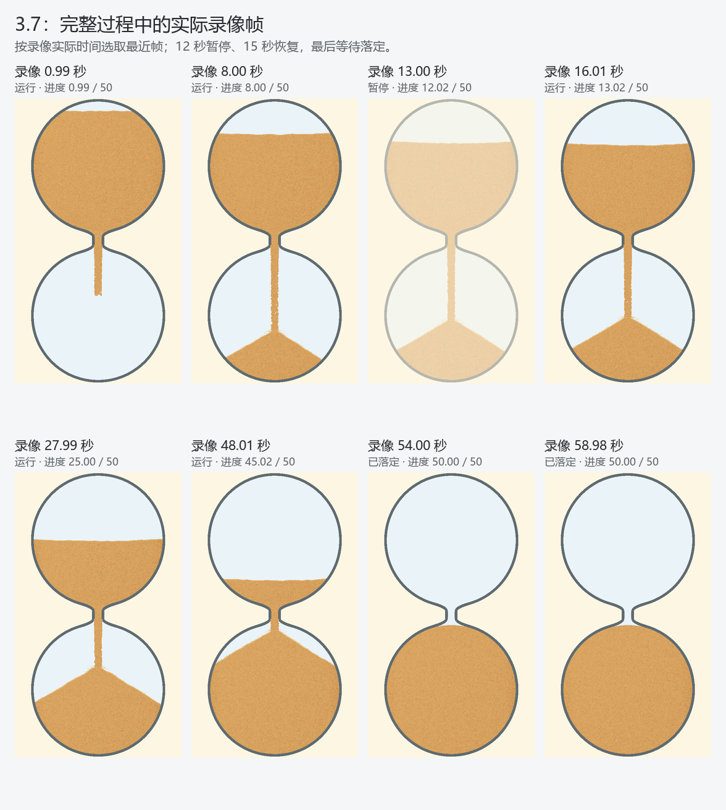
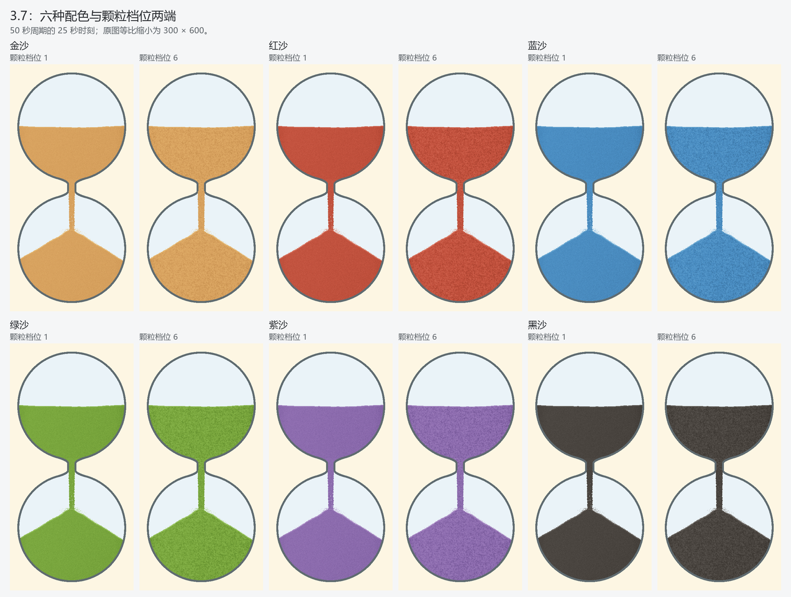

3.7：让每颗沙连续下落
2026-10-23 · Windows PC 隐藏窗口 · 与 3.6 同种子对照
去掉整束沙柱的波浪形裁切。每个存活粒子对应一个短颗粒图元，材质跟随身份和位置；从出口进入画面，落入真实堆面后被遮挡。粒子数量、运动、计时和玻璃轮廓沿用原模型，未接入新物理库。
本轮范围通过：55 张阶段对照保持主粒子、沙量、玻璃与未改区域一致；4 组共 454 张连续实图同时核对实际顶点、粒子生命周期和画面可见；完整录像覆盖暂停、恢复及最终落定。另执行绘制失败回退和相关单元检查。
审阅中修复了两个额外问题：短周期少量粒子画进堆面；绘图框架切换图层后关闭了沙粒所需属性，造成第二帧整层消失。后者由真实像素失败对照拒绝，修复后重新采集全部候选证据。只看粒子数量正确不能证明画面正确。

完整过程
50 秒计时；录像第 12 秒暂停、第 15 秒恢复，等待最后在途沙与飞溅落定。真实时间采集，视频保留实际帧间隔；不是性能计时录像。

同条件 PC 工作耗时
1080×1848、50 秒周期、中段、相同随机种子；每版 3 轮，每轮 300 帧。包含更新、绘制及 GPU 完成等待，排除取图与编码。测量候选时没有其他本轮绘图测试并行。
| 指标 | 3.6 | 3.7 |
|---|---|---|
| 平均每帧 | 3.53 ms | 4.21 ms |
| 最慢 1% 平均 | 5.26 ms | 6.30 ms |
| 最慢一帧 | 6.23 ms | 6.77 ms |
逐粒更新增加约 0.69 ms 平均耗时，三轮均满足本次 PC 工作预算。上述数据不能换算成已验收的实屏刷新率，也不代表 Android 或音频验收。
配色和档位

限制：仍是少量代表粒子的视觉模型，未增加逐粒碰撞；堆面在单粒宽度内以线性插值近似遮挡。本轮仅 PC，不操作 MuMu、ADB 或真机。
审阅记录与摘要 · 原始实图、记录与运行源码 · 轮子选型备忘 · 版本记录目录